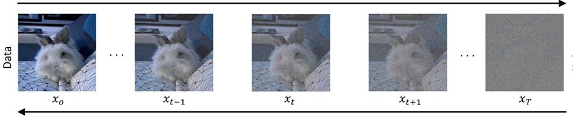
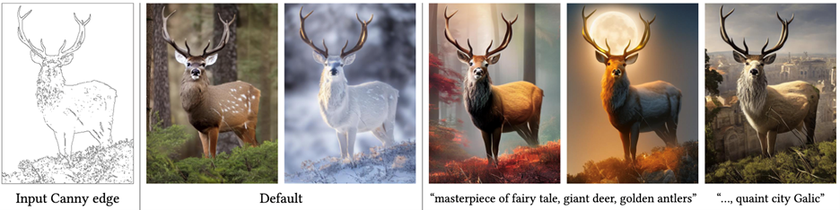

Applying Conditional Control to Multiple Diffusion Generation Framework
Caleb McIrvin, Thomas Lu, Alessandro ShapiroFall 2024 ECE 5554 Computer Vision: Course Project
Virginia Tech
Please see this for an example of how to lay out the various details of your project. You may need to provide more details than this, because you will not be submitting an associated paper to accompany the webpage. So the page should be self-contained.
Problem Statement
Diffusion models [1] have realized excellent performance in computer vision, with generative applications ranging from human image generation [2] to optical illusions [3], [4] and multimodal generation [5]. Additionally, the surging popularity of commercial applications such as DALL-E2 [6] and Midjourney [7] have catapulted diffusion models into the public eye. While diffusion models can produce highly realistic generation results, they can be difficult to explicitly direct due to the stochastic nature of the sampling process. In this work, we seek to realize increased control over generated image subcomponents by incorporating Canny Edge conditioning strategies from ControlNet [8] into the MultiDiffusion [9] generation pipeline.Approach

Diffusion models are typically modeled as a combination of a forward and a reverse process. While multiple formulations of diffusion models exist, we focus primarily on denoising diffusion probabilistic models (DDPMs), one of the more popular variants of diffusion models [10]. Under the DDPM framework, the forward step consists of repeatedly adding Gaussian noise to an image across multiple time steps until the resulting image is indistinguishable from Gaussian noise. The reverse (generative) process attempts to estimate and remove the noise from the image at each time step using a neural network.

The MultiDiffusion pipeline unifies multiple segmentations in a single diffusion generation [9]. In Figure 2 above, segmentation masks are provided for individual image components. In this example, the background mask is associated with the text prompt “blurred image”, while the two foreground masks are associated with “a mouse” and “a pile of books”, respectively. By training a new generation process on top of a pre-trained, frozen diffusion model, the authors of the MultiDiffusion paper can generate images such as the one in Figure 2, where a mouse is sitting on a pile of books in a visually consistent manner, in the locations specified by the segmentation masks. 